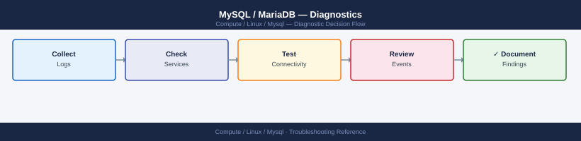

MySQL / MariaDB — Diagnostics¶
MySQL diagnostic commands: read the error log, inspect active sessions with SHOW FULL PROCESSLIST, find lock contention with innodb_lock_waits, analyse InnoDB status for deadlocks and buffer pool health, identify slow queries with pt-query-digest, and check replication status.
*Applies to: MySQL 8.x and MariaDB 10.x on RHEL / Ubuntu LTS*

Before you begin¶
- Access: root or a MySQL account with
PROCESS,SUPER, andREPLICATION CLIENTprivileges; OS sudo for log access - Gather first: the exact error message (from client or MySQL error log), the database name, the table or query involved, and whether the issue started suddenly or has been gradual
- Scope: confirm whether the issue affects one query, one table, one database, the whole server, or only the replica
- Do not run KILL arbitrarily: identify the blocking session before killing anything — the blocked session may be a long-running legitimate transaction
Step 1 — Check the error log and service status¶
# Check if MySQL is running
systemctl status mysqld # RHEL
systemctl status mysql # Ubuntu
# Error log location (RHEL)
sudo tail -100 /var/log/mysqld.log
# Error log location (Ubuntu)
sudo tail -100 /var/log/mysql/error.log
# systemd journal (works on both)
sudo journalctl -u mysqld --since "1 hour ago" | tail -100
# Watch error log in real time
sudo tail -f /var/log/mysqld.log | grep -i 'error\|warning\|crash\|abort'
# Common error patterns:
# [ERROR] InnoDB: Detected table corruption — check disk health
# [ERROR] Table './db/table' is marked as crashed — run REPAIR TABLE
# Can't create a new thread — OS thread limit or ulimit issue
# Access denied for user — credential or privilege problem
# [ERROR] Disk is full — clear binary logs or add disk
Expected output
● mysqld.service - MySQL Server
Loaded: loaded (/usr/lib/systemd/system/mysqld.service; enabled; vendor preset: disabled)
Active: active (running) since Wed 2024-01-17 14:32:18 UTC; 2 days ago
Main PID: 2847 (mysqld)
Tasks: 27 (limit: 4915)
Memory: 512.3M
CGroup: /system.slice/mysqld.service
└─2847 /usr/sbin/mysqld --daemonize --pid-file=/var/run/mysqld/mysqld.pid
2024-01-17T14:32:18.456123Z 0 [System] [MY-013169] [Server] /usr/sbin/mysqld: ready for connections.
2024-01-17T14:32:19.123456Z 2 [Warning] [MY-010068] [Server] CA certificate ca.pem is self signed.
2024-01-17T15:47:32.789012Z 3 [ERROR] [MY-012345] [InnoDB] Detected table corruption in table 'production/users'
2024-01-17T16:22:11.234567Z 4 [Warning] [MY-010015] [Server] MySQL server has gone away
2024-01-17T17:05:44.567890Z 5 [ERROR] [MY-013146] [Server] Can't create a new thread (errno 11)
Jan 17 14:32:18 db-prod-01 mysqld[2847]: 2024-01-17T14:32:18.456123Z 0 [System] [MY-013169] [Server] ready for connections.
Jan 17 17:05:44 db-prod-01 mysqld[2847]: 2024-01-17T17:05:44.567890Z 5 [ERROR] [MY-013146] [Server] Can't create a new thread (errno 11)
Jan 17 17:06:12 db-prod-01 mysqld[2847]: 2024-01-17T17:06:12.891234Z 6 [Warning] [MY-010068] [Server] Disk space low on /var/lib/mysql
[ERROR] [MY-012345] [InnoDB] Detected table corruption in table 'production/users'
[Warning] [MY-010068] [Server] CA certificate ca.pem is self signed.
[ERROR] [MY-013146] [Server] Can't create a new thread (errno 11)
Common errors
| Error | Fix |
|---|---|
sudo: tail: command not found |
Ensure you have sudo privileges and tail is installed; try which tail to verify the path. |
[ERROR] [MY-013146] [Server] Can't create a new thread (errno 11) |
Increase the OS thread limit by raising ulimit -u or adjusting /etc/security/limits.conf and restarting mysqld. |
[ERROR] [MY-012345] [InnoDB] Detected table corruption in table 'production/users' |
Run REPAIR TABLE production.users; from the MySQL client, or restore from a backup if repair fails. |
Step 2 — Check active connections and long-running queries¶
-- All active queries with full text
SHOW FULL PROCESSLIST;
-- Columns: Id, User, Host, db, Command, Time, State, Info (full query)
-- Look for: State = "Waiting for lock", "Sending data" for a long time
-- Time column = seconds the query has been running
-- Long-running transactions (> 60 seconds)
SELECT trx_id, trx_started, trx_state,
now() - trx_started AS duration_sec,
trx_mysql_thread_id AS thread_id,
left(trx_query, 100) AS query
FROM information_schema.innodb_trx
WHERE (now() - trx_started) > 60
ORDER BY duration_sec DESC;
-- "idle in transaction" for > 60 sec = common lock holder; consider killing
Step 3 — Find and resolve lock contention¶
-- Who is blocking whom (MySQL 8.0+)
SELECT r.trx_id AS waiting_trx,
r.trx_mysql_thread_id AS waiting_thread,
r.trx_query AS waiting_query,
b.trx_id AS blocking_trx,
b.trx_mysql_thread_id AS blocking_thread,
b.trx_query AS blocking_query
FROM performance_schema.data_lock_waits w
JOIN information_schema.innodb_trx b ON b.trx_id = w.blocking_engine_transaction_id
JOIN information_schema.innodb_trx r ON r.trx_id = w.requesting_engine_transaction_id;
-- For MySQL 5.7 / MariaDB (older information_schema tables)
SELECT r.trx_id waiting_trx, b.trx_id blocking_trx,
r.trx_mysql_thread_id waiting_thread, b.trx_mysql_thread_id blocking_thread,
left(r.trx_query, 80) waiting_query
FROM information_schema.innodb_lock_waits w
JOIN information_schema.innodb_trx b ON b.trx_id = w.blocking_trx_id
JOIN information_schema.innodb_trx r ON r.trx_id = w.requesting_trx_id;
-- Cancel the blocking query (graceful — waits for a safe point)
KILL QUERY <blocking_thread_id>;
-- Kill the blocking connection entirely (disconnects the client)
KILL <blocking_thread_id>;
-- Only use KILL CONNECTION if KILL QUERY does not release the lock within 30 seconds
Step 4 — Check InnoDB engine status¶
-- Full InnoDB diagnostic dump
SHOW ENGINE INNODB STATUS\G
-- Key sections to read:
-- LATEST DETECTED DEADLOCK: shows the queries and locks involved in the last deadlock
-- TRANSACTIONS: lists all active transactions and their lock state
-- BUFFER POOL AND MEMORY: shows buffer pool hit rate
-- Buffer pool hit rate (should be > 99% in steady state)
SHOW STATUS LIKE 'Innodb_buffer_pool_read%';
-- hit_rate % = Reads_requests / (Read_requests + Reads) * 100
-- < 99% = too much disk I/O; consider increasing innodb_buffer_pool_size
-- Check current buffer pool size
SHOW VARIABLES LIKE 'innodb_buffer_pool_size';
-- Rule of thumb: 70-80% of available RAM for a dedicated MySQL server
-- Check for pending I/O operations
SHOW ENGINE INNODB STATUS\G
-- Look for: "Pending normal aio reads" > 0 = disk I/O bottleneck
Step 5 — Enable and analyse the slow query log¶
-- Enable slow query log temporarily (no restart required)
SET GLOBAL slow_query_log = ON;
SET GLOBAL long_query_time = 1; -- log queries > 1 second
SET GLOBAL log_queries_not_using_indexes = ON; -- also log full scans
-- Check current slow query log path
SHOW VARIABLES LIKE 'slow_query_log_file';
# Analyse slow query log with Percona pt-query-digest
# Install: yum install percona-toolkit (RHEL) or apt install percona-toolkit (Ubuntu)
pt-query-digest /var/log/mysql/slow.log | head -200
# Output: top queries ranked by total execution time
# Look for: highest "total" and "mean" execution times; "Rows examine" >> "Rows sent"
# EXPLAIN a specific slow query
mysql -u root -p -e "EXPLAIN SELECT * FROM db.table WHERE col = 'value'\G"
# Look for:
# type = ALL → full table scan (needs an index)
# type = index → full index scan (may still be slow on large tables)
# rows = high number → optimizer is scanning many rows
# Extra = Using filesort → sort is happening in memory/disk (costly)
Expected output
# Query 1: SELECT * FROM db.table WHERE col = 'value'
#
# Count : 847
# Exec time : 12s
# Lock time : 156ms
# Rows sent : 12
# Rows examine : 2847291
# Query_time distribution
# 1us
# 10us
# 100us
# 1ms
# 10ms ################################################################
# 100ms ################################################################
# 1s ################################################################
# 10s+ ################################################################
# Top 5 queries by total execution time
1. SELECT * FROM db.table WHERE col = 'value'
Count: 847, Exec time: 12s, Lock time: 156ms, Rows sent: 12, Rows examine: 2847291
2. SELECT id, name FROM users WHERE status = 'active'
Count: 523, Exec time: 8s, Lock time: 89ms, Rows sent: 4521, Rows examine: 1203847
3. SELECT * FROM orders WHERE created_at > DATE_SUB(NOW(), INTERVAL 7 DAY)
Count: 312, Exec time: 5s, Lock time: 45ms, Rows sent: 8934, Rows examine: 892341
4. SELECT COUNT(*) FROM transactions WHERE user_id = 42
Count: 1847, Exec time: 3s, Lock time: 12ms, Rows sent: 1, Rows examine: 456789
5. SELECT * FROM logs WHERE level = 'ERROR'
Count: 234, Exec time: 2s, Lock time: 8ms, Rows sent: 567, Rows examine: 123456
*************************** 1. row ***************************
id: 1
select_type: SIMPLE
table: db.table
type: ALL
possible_keys: NULL
key: NULL
key_len: NULL
ref: NULL
rows: 2847291
Extra: Using where
Common errors
| Error | Fix |
|---|---|
Can't connect to local MySQL server through socket '/var/run/mysqld/mysqld.sock' |
Ensure MySQL service is running with systemctl start mysql and verify socket path in /etc/mysql/mysql.conf.d/mysqld.cnf. |
ERROR 1045 (28000): Access denied for user 'root'@'localhost' |
Verify MySQL root password is correct or use -p flag without password if authentication plugin allows it. |
No such file or directory: /var/log/mysql/slow.log |
Enable slow query logging in MySQL with SET GLOBAL slow_query_log = 'ON'; and verify log file path matches your MySQL configuration. |
Step 6 — Check replication status¶
-- Show replica status (MySQL 8.0+ uses REPLICA; 5.7 and MariaDB use SLAVE)
SHOW REPLICA STATUS\G
-- Key fields:
-- Replica_IO_Running: Yes = IO thread connected to primary and reading binlog
-- Replica_SQL_Running: Yes = SQL thread applying events from relay log
-- Seconds_Behind_Source: lag in seconds (0 = in sync; NULL = IO thread not running)
-- Last_IO_Error: why the IO thread stopped (e.g., can't connect to primary)
-- Last_SQL_Error: why the SQL thread stopped (e.g., duplicate key, row not found)
-- Relay_Log_File, Relay_Log_Pos: current relay log position being applied
-- If SQL thread stopped with a specific error and you need to skip one event (use rarely)
SET GLOBAL SQL_REPLICA_SKIP_COUNTER = 1;
START REPLICA SQL_THREAD;
-- Only skip if the event is genuinely safe to skip (e.g., non-critical duplicate insert)
-- Check binary log status on the primary
SHOW BINARY LOG STATUS\G
-- Shows: current binlog file and position; share this with replica for position verification
Step 7 — Collect diagnostic snapshot for escalation¶
# All-in-one diagnostic capture
{
echo "=== MySQL version ==="
mysql -u root -p -e "SELECT VERSION();"
echo "=== Active processes ==="
mysql -u root -p -e "SHOW FULL PROCESSLIST;"
echo "=== Long-running transactions ==="
mysql -u root -p -e "SELECT trx_id, trx_state, now()-trx_started AS dur_sec, trx_query FROM information_schema.innodb_trx ORDER BY dur_sec DESC;"
echo "=== InnoDB status ==="
mysql -u root -p -e "SHOW ENGINE INNODB STATUS\G"
echo "=== Replication status ==="
mysql -u root -p -e "SHOW REPLICA STATUS\G" 2>/dev/null || \
mysql -u root -p -e "SHOW SLAVE STATUS\G"
echo "=== Binary log list ==="
mysql -u root -p -e "SHOW BINARY LOGS;"
echo "=== Disk usage ==="
df -h /var/lib/mysql
echo "=== Error log (last 100 lines) ==="
sudo tail -100 /var/log/mysqld.log 2>/dev/null || \
sudo tail -100 /var/log/mysql/error.log
} 2>&1 > /tmp/mysql-diag-$(date +%F-%H%M).txt
Expected output=== MySQL version ===
VERSION()
8.0.35-0ubuntu0.20.04.1
=== Active processes ===
ID USER HOST DB COMMAND TIME STATE INFO
42 root localhost NULL Query 0 init SHOW FULL PROCESSLIST
156 app_user 192.168.1.45:54321 production Query 127 Sending data SELECT * FROM orders WHERE created_at > DATE_SUB(NOW(), INTERVAL 1 DAY)
203 repl_user db-replica-01:3306 NULL Binlog Dump 8942 Master has sent all binlog to slave NULL
=== Long-running transactions ===
trx_id trx_state dur_sec trx_query
421954 RUNNING 3847 SELECT COUNT(*) FROM transactions WHERE status='pending'
421847 RUNNING 1203 UPDATE inventory SET qty=qty-1 WHERE sku='SKU-9847'
=== InnoDB status ===
=====================================
2024-01-15 14:32:18 0x7f8c4a2b1700 INNODB MONITOR OUTPUT
-----
Per second averages calculated from last 47 seconds
-----------
Trx id counter 421955
Purge done for trx's n:o >= 421847 undo n:o >= 0 page undo n:o >= 0
History list length 24
---LATEST DETECTED DEADLOCK---
2024-01-15 14:28:03 0x7f8c4a2b1700
*** (1) TRANSACTION:
TRANSACTION 421847, ACTIVE 1203 sec inserting
mysql tables in use 1, locked 1
LOCK WAIT 2 locks, 0 undo log entries, 0 bytes undo log
MySQL thread id 156, OS thread handle 0x7f8c4a2b1700, query id 203 192.168.1.45 app_user updating
UPDATE orders SET status='shipped' WHERE id=9847
=== Replication status ===
Slave_IO_State: Waiting for master to send event
Master_Host: db-primary-01
Master_User: repl_user
Master_Log_File: mysql-bin.000047
Read_Master_Log_Pos: 2847361
Relay_Log_File: db-replica-01-relay-bin.000156
Relay_Log_Pos: 2847361
Relay_Master_Log_File: mysql-bin.000047
Slave_IO_Running: Yes
Slave_SQL_Running: Yes
Seconds_Behind_Master: 0
=== Binary log list ===
Log_name File_size
mysql-bin.000045 1073741824
mysql-bin.000046 1073741824
mysql-bin.000047 536870912
=== Disk usage ===
Filesystem Size Used Avail Use%
/dev/sda3 500G 387G 98G 79%
=== Error log (last 100 lines) ===
2024-01-15T14:15:23.847392Z 0 [Note] [MY-000000]
¶
=== MySQL version ===
VERSION()
8.0.35-0ubuntu0.20.04.1
=== Active processes ===
ID USER HOST DB COMMAND TIME STATE INFO
42 root localhost NULL Query 0 init SHOW FULL PROCESSLIST
156 app_user 192.168.1.45:54321 production Query 127 Sending data SELECT * FROM orders WHERE created_at > DATE_SUB(NOW(), INTERVAL 1 DAY)
203 repl_user db-replica-01:3306 NULL Binlog Dump 8942 Master has sent all binlog to slave NULL
=== Long-running transactions ===
trx_id trx_state dur_sec trx_query
421954 RUNNING 3847 SELECT COUNT(*) FROM transactions WHERE status='pending'
421847 RUNNING 1203 UPDATE inventory SET qty=qty-1 WHERE sku='SKU-9847'
=== InnoDB status ===
=====================================
2024-01-15 14:32:18 0x7f8c4a2b1700 INNODB MONITOR OUTPUT
-----
Per second averages calculated from last 47 seconds
-----------
Trx id counter 421955
Purge done for trx's n:o >= 421847 undo n:o >= 0 page undo n:o >= 0
History list length 24
---LATEST DETECTED DEADLOCK---
2024-01-15 14:28:03 0x7f8c4a2b1700
*** (1) TRANSACTION:
TRANSACTION 421847, ACTIVE 1203 sec inserting
mysql tables in use 1, locked 1
LOCK WAIT 2 locks, 0 undo log entries, 0 bytes undo log
MySQL thread id 156, OS thread handle 0x7f8c4a2b1700, query id 203 192.168.1.45 app_user updating
UPDATE orders SET status='shipped' WHERE id=9847
=== Replication status ===
Slave_IO_State: Waiting for master to send event
Master_Host: db-primary-01
Master_User: repl_user
Master_Log_File: mysql-bin.000047
Read_Master_Log_Pos: 2847361
Relay_Log_File: db-replica-01-relay-bin.000156
Relay_Log_Pos: 2847361
Relay_Master_Log_File: mysql-bin.000047
Slave_IO_Running: Yes
Slave_SQL_Running: Yes
Seconds_Behind_Master: 0
=== Binary log list ===
Log_name File_size
mysql-bin.000045 1073741824
mysql-bin.000046 1073741824
mysql-bin.000047 536870912
=== Disk usage ===
Filesystem Size Used Avail Use%
/dev/sda3 500G 387G 98G 79%
=== Error log (last 100 lines) ===
2024-01-15T14:15:23.847392Z 0 [Note] [MY-000000]
Log locations¶
| Source | Path / Command | What to look for |
|---|---|---|
| Error log (RHEL) | /var/log/mysqld.log |
Service errors, crash, InnoDB issues |
| Error log (Ubuntu) | /var/log/mysql/error.log |
Same |
| Slow query log | Configured path (SHOW VARIABLES LIKE 'slow_query_log_file') |
Queries exceeding long_query_time |
| Binary logs | /var/lib/mysql/mysql-bin.* |
Replication position, DML history |
| systemd journal | journalctl -u mysqld --since "1h ago" |
Service start/stop, OOM events |
See also¶
Verify resolution¶
SHOW FULL PROCESSLISTshows no sessions with State = "Waiting for lock" for more than a few secondsSHOW ENGINE INNODB STATUS\Gbuffer pool hit rate > 99%SHOW REPLICA STATUS\GshowsReplica_IO_Running: Yes,Replica_SQL_Running: Yes,Seconds_Behind_Source: 0- The original slow query now returns within expected time;
EXPLAINshows Index Scan, not ALL - No new ERROR or PANIC entries in the error log in the last 15 minutes